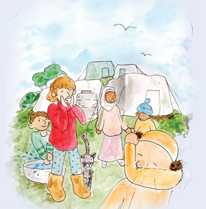
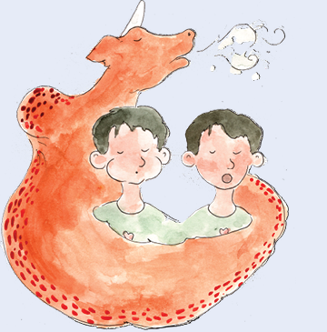
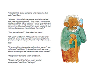

KEY MESSAGE 3 Coping with stress
CHAT 3
Let’s CHAT
Ario is flying Sara and Salem across the world. It is hard to believe that everyone is having the same symptoms of the same COVID-19 disease and need to take the same protections. Sara and Salem are real heroes to go with Ario across the world and share lessons about the ways we can protect ourselves to avoid getting sick.

ASK the children
What is the advice Sara and Salem are sharing?
Children will say: “They are warning everyone to avoid getting infected they need to stay home and when they are outside not to shake hands, stay apart of another person, wash with soap and water, and cough into their sleeves not into the air.”
Let’s CHAT
Sara says again that she feels “scared”. Even in her dream, she is still scared and feels stressed about the changes the coronavirus has made to her life. Ario, is a giant dragon, and even he is scared of the coronavirus.
ASK the children
The big truth is that the coronavirus is scary. What does your body do when you feel scared?
Children might say:
-
“I sweat.”
-
“I get a headache.”
-
“My legs want to run.”
-
“I feel jumpy.”
-
“I want to vomit.’
Let’s CHAT
Our bodies and our brains and our hearts talk together when we are scared. In our brains, we keep thinking over and over about what scares us. In our hearts, we feel scared. In our bodies, (repeat what the children said).
We are all scared about the coronavirus. It is hard to be a hero and protect yourself and others when you feel scared.
Even though the scary thing is still here, we can still take action to help us relax. Relaxing eases the feelings of stress in our bodies. When we ease the stress in our bodies, it slows down the thinking and worry in our brains and calms our hearts and our fears.
Relaxing can help us to live with our stress. If we feel more relaxed, it is easier to think clearly and find actions we can take.
ASK the children
What do you do to help yourselves relax when you feel scared about the coronavirus?
Children might say
-
“I ignore it.”
-
“I get angry.”
-
“I go and play.”
-
“I cry.”
ASK the children
When you do these things do you feel better?
Children might say
-
“YES, For a little while.”
-
“NO, it doesn’t matter.”
-
“I don’t know.’
Let’s CHAT
All your ideas are good. And, if they help you relax, great. I have some more ideas about what to do when we get scared.
First, it is good to share and tell me or another adult when you feel scared. We can always CHAT, not only today when we read the storybook. I hope when you feel scared you tell me and together, we can find ways to help you to relax. Chatting can help us to relax. “A problem shared is a problem halved.” There are lots of ways to relax. To relax, we can play sports, run, dance, sing or pray.
Ario says when he wants to relax he breathes slowly and out comes fire. The fire sounds scary, but the slow breathing helps Ario to relax. We can do slow deep breathing from our belly, without the scary fire.
Let’s try it together. Breathing slowly and deeply can help us to relax. We breathe in slowly and as we breathe in we count in our heads 1-2-3-4-5. We hold our breathe and count 1-2-3. And, slowly we release the breath and count in our heads 1-2-3-4-5. Let’s try it together. If you want, it’s good to close your eyes. I will count aloud for you while you count in your head. We will do it 3 times.
Ready?

ASK the children
Adults say, “Let’s feel a little scared so we see if breathing slowly helps. Let’s think of that scary picture of a floating coronavirus. Keep the picture in your mind and let’s breath slowly together.” Ready to start.
Adults say, ‘Listen to my voice and please do what I say. Slowly, as I count, take a deep breath 1.…2.…3.…4...5…. Hold your breath 1…2…3… Slowly, as I count, release your breath 1...2...3...4...5.
Let’s continue a second time. Slowly, as I count, take a deep breath 1...2...3...4...5. Hold your breath 1…2….3…. Slowly, as I count, release your breath I…2…3. …4. …5.…
Let’s continue a third time. Slowly, as I count, take a deep breath 1…2...3…4...5... Hold your breath 1….2….3…. Slowly, as I count, release your breath 1….2...3...4...5….
ASK the children
Adults ask, “How does your body feel? What happened to the picture in your head of the coronavirus?”
Children say:
-
“I felt my heart slow down.”
-
“The coronavirus went bye bye.”
-
“ I felt calm.”
-
“I wanted sleep.”
Let’s CHAT
Let’s read what Sara does to feel calm and safe.
> Read these pages of My Hero is You

